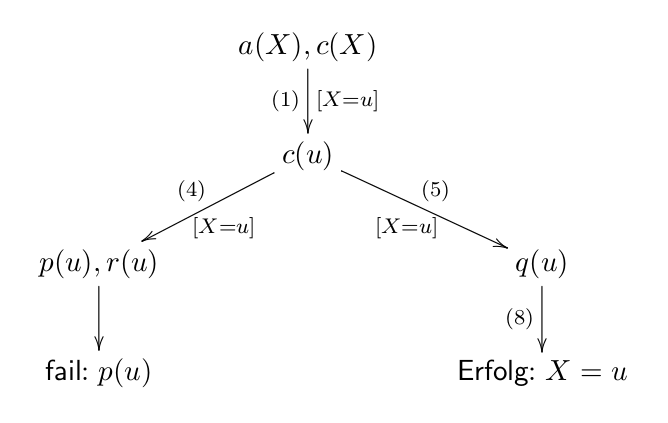

Prolog & CHR
Falco Nogatz
25. Juli 2012
PDP-Repetitorium


Anders als in imperativen Programmiersprachen stehen Variablen nicht für Speicherplätze, sondern sind Platzhalter für genau einen Wert. Sie können, einmal gebunden, keinen anderen Wert mehr annehmen.
Gebundene Variablen lassen sich nicht (ohne weiteres) vom konkreten Wert, für den sie stehen, unterscheiden.
% fangen mit kleinem Buchstaben an otto, karl, mensch, person_, uni_mensa % oder sind in Hochkommata eingeschlossen 'Otto', 'Karl', 'Mensch', 'Person', 'Uni-Mensa' % oder sind Zahlen 1, 2.3, -5
% beginnen mit einem Großbuchstaben X, Y, Mensch, Hochschule, ... % oder beginnen mit einem Unterstrich _mensch, _hochschule, ... % oder sind anonym (vgl. Wildcard in Haskell) _
% bestehen aus Funktionssymbol und Argumenten name(k1, k2, ..., kn) % sind charakterisiert durch Namen und Anzahl der Argumente name/n % "Funktor" % können geschachtelt und mit unterschiedlichen Stelligkeiten % definiert werden
Welche Typen werden in Prolog unterschieden?
Praktisch keine Typisierung in Prolog!
[]
[1,2,3,4]
[X|Xs], [A,B|Rest]
(1,2,'c')
zahlenpaar(1,1)
+, -, *, /, //, mod
^ und **
=:=, =\=, <, >, =<, >=
"Gleichmachen von Termen": Zwei Terme sind unifizierbar, wenn sie entweder gleich sind, oder durch Bindung von Variablen gleich gemacht werden können.
Dabei sind folgende Regeln zu beachten:
Unifikation geschieht über den "=" Operator.
Beispiele:
[A,B] = [a,b].
% bindet A=a, B=b.
[A|B] = [a,b].
% bindet A=a, B=[b].
[A, f(x,y)|R] = [f(R), B].
% bindet A=f(R), B=f(x,y), R=[].
sum([X,Y],R) = sum([2,f(Y)],R).
% nicht unifizierbar, da Y=f(Y).
Arithmetische Variablenbindungen werden in Prolog mit is durchgeführt statt "=". Warum?
Beispiel:
X = 4/5. % unifiziert nur X und "4/5", berechnet aber nichts X is 4/5. % berechnet 4/5 und bindet X an diesen Wert
Beispiele:
mensch(falco). mensch(markus). freunde(falco,markus). freunde(markus,falco). term(f(x,y)). leere_liste([]). prolog_ist_toll. element(X, [X|_]).
kopf/n :- rumpf1, ..., rumpfn.
elternteil(X,Y) :- kind(Y,X). kind(X,Y) :- elternteil (Y,X).
Beispiele:
freund(X,Y) :- freund(Y,X). % wird Problem bei Abfrage von freund(A,B). grossvater(X,Y) :- mutter(X,M), vater(M,Y). grossvater(X,Y) :- vater(X,V), vater(V,Y). prolog_ist_toll :- sprache(prolog), toll(prolog). es_gibt_tolle_sprache :- sprache(X), toll(X).
(Übungsaufgabe 8-4)
Gegeben sei folgendes Prolog-Programm:
(1) a(u). (2) b(s). (3) b(t). (4) c(X) :- p(X),r(X). (5) c(X) :- q(X). (6) p(t). (7) q(t). (8) q(u). (9) r(s).
Anfragen:
?- a(X),c(X). ?- b(X),c(X).
(1) a(u). (2) b(s). (3) b(t). (4) c(X) :- p(X),r(X). (5) c(X) :- q(X). (6) p(t). (7) q(t). (8) q(u). (9) r(s).
?- a(X),c(X).
?- b(X),c(X).

member(X,[X|_]). member(X,[_|Xs]) :- element(X,Xs).
append([],L,L). append([X|L1], L2, [X|L3]) :‐ append(L1, L2, L3).
Keine Unterscheidung zwischen Eingabe- und Ausgabeparametern in Prolog:
append([1,2],[3,4],[1,2,3,4]). % true append([1,2],[3,4],X). % X = [1,2,3,4] append([1,2],X,[1,2,3,4]). % X = [3,4] append(A,B,[1,2,3,4]). % 10 Lösungen über Backtracking
reverse([],[]). reverse([H|T],Neu2) :- reverse(T,Neu), append(Neu,[H],Neu2).
write('Hello '), write(Name), write('!').
write('Hello '), write(Name), write('!'), nl,
write('Alles klar?').
\+(member([1,[2,3,4]])) % true
Soll ein CHR Constraint benutzt werden, muss es am Anfang des Programms definiert werden:
% Allgemein: % chr_constraint Name/Stelligkeit. chr_constraint leq/2. chr_constraint prime/1, num/1, num/2.
Kopf1, ..., Kopfn ==> Rumpf1, ..., Rumpfn % Die Constraints aus dem Kopf verbleiben im % Constraint-Speicher, die im Rumpf kommen dazu.
Beispiel ("less-or-equal"):
leq(A,B), leq(B,C) ==> leq(A,C).
→ Häufige Anwendung bei der Generierung von Kandidaten. (Vgl. Primzahlsieb, Teiler)
Kopf1, ..., Kopfn <=> Rumpf1, ..., Rumpfn % Die Constraints aus dem Kopf werden aus dem % Constraint-Speicher entfernt, die aus dem Rumpf % hinzugefuegt.
Beispiel:
nord, sued <=> true.
→ Anwendung bei redundanten oder unwichtigen Informationen.
Kept1, ..., Keptn \ Removed1, ..., Removedn <=> New1, ..., Newn % Die Kept-Constraints aus dem Kopf werden im % Constraint-Speicher belassen, die Removed-Constraints % entfernt, und die New-Constraints aus dem Rumpf % neu hinzugefügt.
Beispiele:
prime(N) \ prime(N) <=> true. fib(B) \ fib(A) <=> A < B | N is A+B, fib(N).
Anwendungen:
Jede Regel kann einen optionalen Namen besitzen, der durch ein @ abgetrennt wird:
name @ Regel... removeDuplicates @ num(A) \ num(A) <=> true.
Ist optional und für uns unerheblich → einfach weglassen...
Jede Regel kann einen optionalen Wächter (Guard) besitzen, der als Bedingung zur Anwendung der Regel dient. Der Guard steht stets vor dem Regelrumpf.
Beispiele:
fib(B) \ fib(A) <=> A < B | N is A+B, fib(N). min(A) \ min(B) <=> B > A | true.
Achtung:
Im Guard dürfen nur Built-in Constraints, also keine selbst definierten, stehen!Der Guard sollte nie eine Unfikation beinhalten.
... gibt's mit Lösungsvorschlägen hier:
github.com/fnogatz/talks/pdp-rep-12/prolog/exercises.html
Thanks to Benjamin Erb for the html5slides and uulm template.
Title image: Miran Lipovača under CC BY-NC-SA 3.0